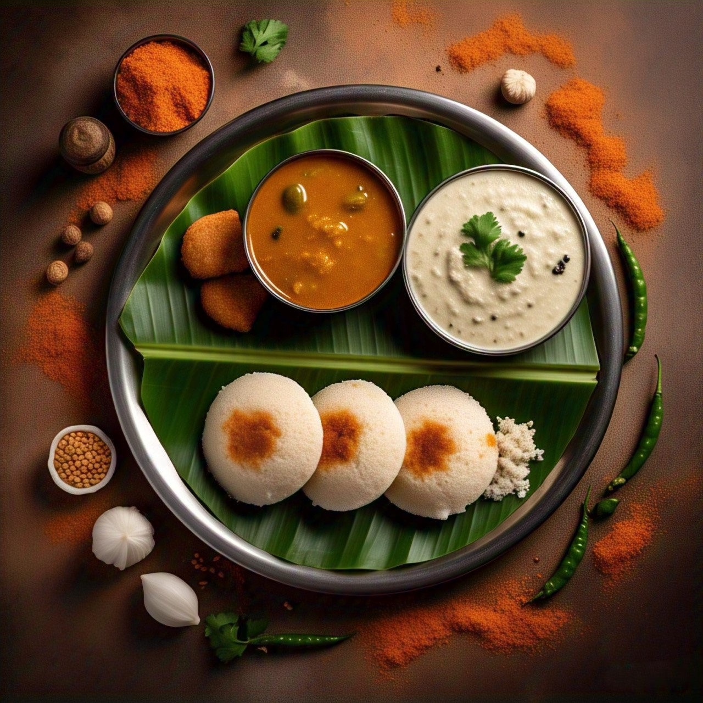
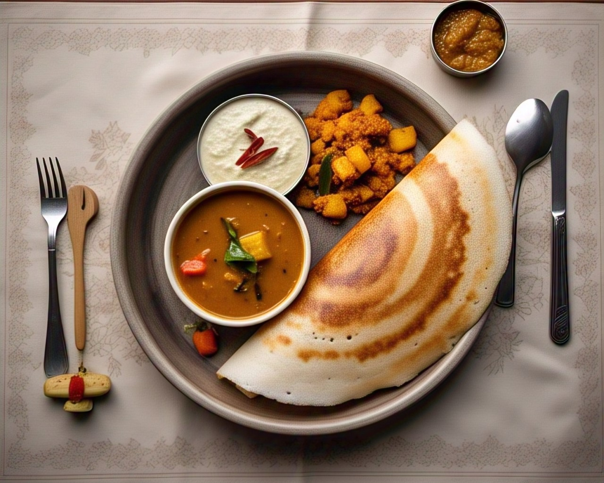
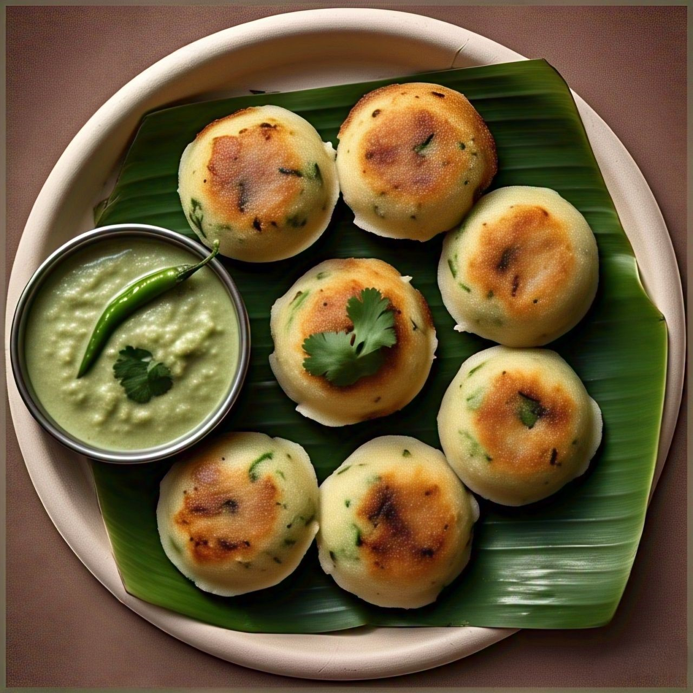

Idli-Sambar-Coconut Chutney
Ingredients:
- For Idli:
- 2 cups idli rice
- 1 cup urad dal (husked black gram)
- 1/2 tsp fenugreek seeds
- Salt to taste
- Water as needed
- For Sambar:
- 1 cup toor dal (pigeon peas)
- 1 onion (sliced)
- 1 tomato (chopped)
- 2-3 green chilies
- 1 cup sliced Red pumpkin
- 1 tbsp of ginger-garlic and coconut paste
- 2 drum-sticks chopped into pieces
- 2 tbsp tamarind pulp
- 1 tsp grated jaggery
- 1/2 tsp turmeric powder
- 1 tsp red chili powder
- 1 tbsp sambar powder
- Salt to taste
- 1/2 tsp hing
- 2 tbsp oil
- For Coconut Chutney:
- 1/2 cup grated coconut
- 2 tbsp soaked chana dal
- 2-3 green chilis
- 1-2 cloves of ginger-garlic
- 1 tsp mustard seeds
- 1 tsp cumin seeds
- 1/4 tsp hing
- Salt to taste
- Water as needed

Recipe:
- For Idli:
- Soak rice and urad dal separately (fenugreek seeds with dal) for 6 hours.
- Grind dal to a smooth batter and rice to a coarse batter.
- Mix both, add salt, and ferment overnight.
- Grease idli molds, pour batter, and steam for 10-12 minutes.
- For Sambar:
- In a pressure cooker, combine toor dal, chana dal, onion, tomato, green chilies, pumpkin, drumsticks, and turmeric powder.
- Add 3 cups water and salt. Pressure cook for 3-4 whistles until dal and veggies are soft.
- Once pressure releases, mash the dal lightly, leaving some texture.
- Heat oil in a small pan. Add mustard seeds, cumin seeds, dried chilies, hing, and curry leaves. Let it crackle.
- Add sambar powder, red chili powder, jaggery, tamarind pulp, and ginger-garlic-coconut paste. Mix well and simmer for 5-7 minutes.
- Pour the sambar and mix well.
- Garnish with fresh coriander and serve hot with rice, idli, dosa, or appe.
- For Coconut Chutney:
- Grind coconut, chana dal, green chilis, ginger-garlic, coriander, curd and salt to a smooth paste.
- Prepare tempering — heat oil, crackle mustard seeds, cumin seeds, curry leaves.
- Pour the tempering over chutney and mix well.
Dosa-Sambar-Chutney
Ingredients:
- Same batter as idli (slightly thinner consistency)
- Oil or ghee for cooking

Recipe:
- Heat a tawa, lightly grease.
- Pour a ladle of batter, spread in a circular motion.
- Drizzle oil/ghee around edges, cook till crispy.
- Serve hot with chutney and sambar.
Sambar and Chutney (reused from above)
Appe-Chutney
Ingredients:
- 1.5 cups idli/dosa batter
- 1 small onion (finely chopped)
- 1 green chili (finely chopped)
- 1/2 tsp mustard seeds
- A few curry leaves (chopped)
- 2 tbsp coriander leaves (chopped)
- Oil for frying

Recipe:
- Heat oil, splutter mustard seeds, sauté onions, chili, curry leaves.
- Mix the tempering into the batter, add coriander leaves.
- Heat appe pan, grease, pour batter into molds.
- Cook till golden brown on both sides, flipping halfway.
Chutney (reused from above)